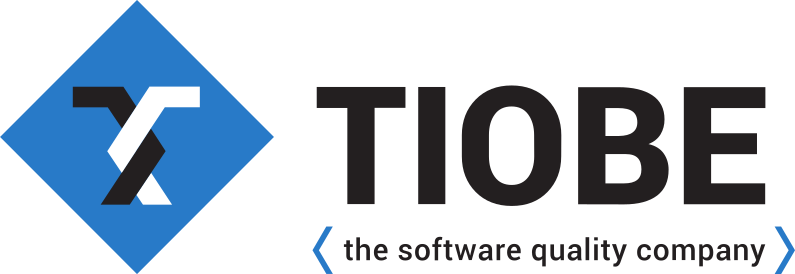
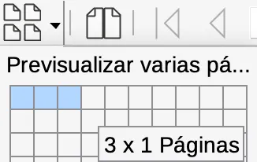
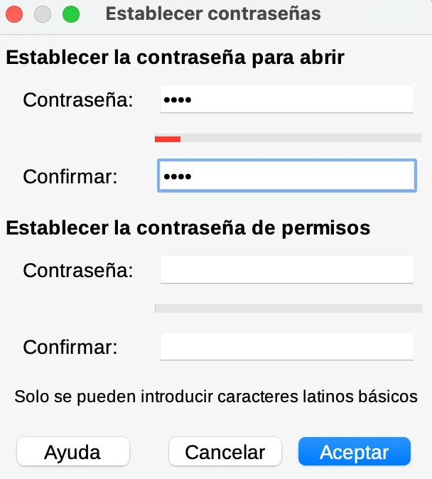
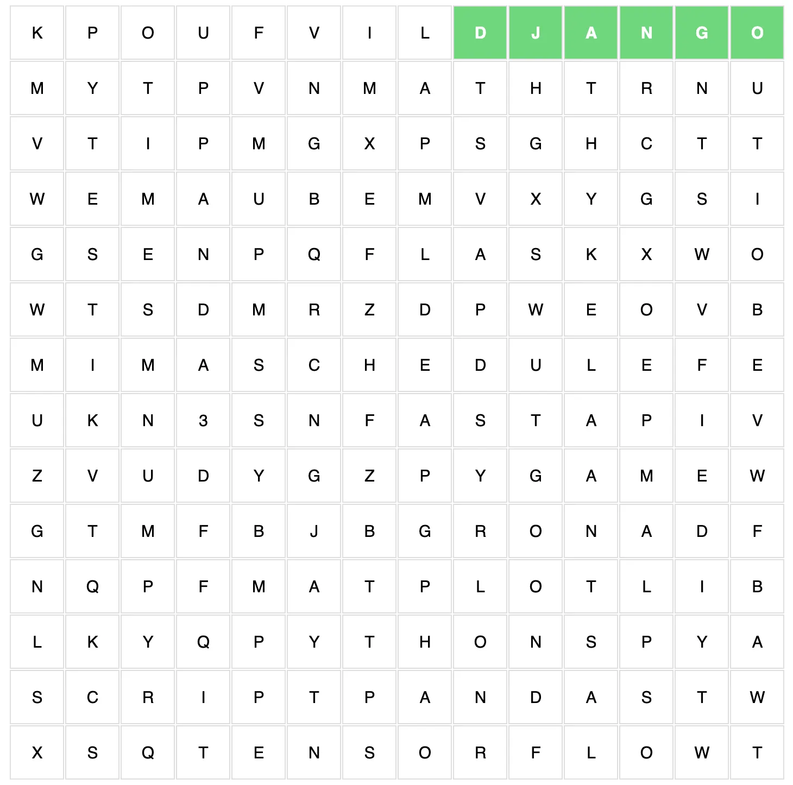

Guía 1023: PYTHON (P3)¶
|
|

Exploración Estructuración Actividad práctica Transferencia
Temática: Fundamentos del lenguaje de programación Python, historia, características y uso práctico en la consola interactiva.
Objetivo de aprendizaje: Comprender la importancia de Python y aprender a utilizar la consola interactiva para consultar documentación y explorar el lenguaje de forma autónoma.
Componente: Uso y apropiación de la T&I.
Competencia: Genero propuestas innovadoras para el uso y aprovechamiento de productos tecnológicos.
Evidencia de aprendizaje: Utilizo adecuadamente herramientas informáticas para la búsqueda, organización, procesamiento, sistematización, comunicación y difusión de ideas.
Actividades desarrolladas en su totalidad.
Participación en clase.
Explicación clara de conceptos.
Argumentación de ideas.
Cumplimiento de las reglas del aula.
PYTHON ONLINE. Ejercutar la consola interactiva PYTHON en el navegador.
Mensaje del autor¶
“En esta guía didáctica, el estudiante se familiariza con la consola interactiva de Python, una herramienta fundamental para explorar y conocer las características básicas del lenguaje. Este primer acercamiento le permite al estudiante comprender cómo funciona Python y sentar las bases necesarias para un aprendizaje más profundo y estructurado en programación”.
—Camilo Fonseca
A00: Introducción (5%)¶
Exploración
TRANSCRIBA en su cuaderno el objetivo, las orientaciones curriculares y los criterios de evaluación de la presente guía.
LEA el mensaje del autor y en su cuaderno responda las siguientes preguntas:
¿Qué entiende por consola interactiva?
¿Qué es para usted la palabra interactivo?
Por medio de un lenguaje de programación ¿Puedo comunicarme con una máquina? ¿Por qué?
El proceso de comunicación, ¿Se limita a solo dar órdenes o instrucciones? ¿Por qué?
A01: Lenguaje de programación PYTHON (5%)¶
Estructuración
Lea los siguientes conceptos:
¿Qué es PYTHON?¶

Acceder a la web PYTHON
Python es un lenguaje de programación interpretado de alto nivel creado por Guido van Rossum y publicado por primera vez en 1991. Está diseñado pensando en la legibilidad del código, y su sintaxis permite a los programadores expresar conceptos en menos líneas de código.
¿Qué es un lenguaje de programación?
Un lenguaje de programación es un conjunto de reglas y sintaxis que permite a los programadores dar instrucciones a una computadora para que realice tareas específicas. Es una forma de comunicarse con las máquinas.
Principales características de Python¶
A continuación se muestran algunas de las características de Python que lo convierten en un lenguaje de programación tan versátil y ampliamente utilizado:
Legibilidad. Python es conocido por su sintaxis clara y legible, que se parece en cierto modo a la inglesa.
1import time 2 3saludo = "Buenos días" 4 5def saludar(): 6 print(saludo) 7 8saludo()
Fácil de aprender. La legibilidad de Python hace que sea relativamente fácil para los principiantes entender lo que hace el código.
Versatilidad. Python no está limitado a un tipo de tarea: Usted puede utilizarlo en muchos campos. Si le interesa el desarrollo web, la automatización de tareas o la ciencia de datos, Python tiene las herramientas necesarias.
Amplia compatibilidad con bibliotecas. Incluye una gran biblioteca estándar con código pre-escrito para diversas tareas, lo que te ahorra tiempo y esfuerzo. Además, la vibrante comunidad de Python ha desarrollado miles de paquetes de terceros, que amplían aún más la funcionalidad de Python.
Independencia de la plataforma. Una de las grandes ventajas del lenguaje es que se puede escribir el código una vez y ejecutarlo en cualquier sistema operativo. Esta característica hace que Python sea una gran elección si trabaja en un equipo con diferentes sistemas operativos.
Lenguaje interpretado. Python es un lenguaje interpretado, lo que significa que el código se ejecuta línea a línea. Esto puede facilitar la depuración, ya que se puede probar pequeños fragmentos de código sin tener que compilar todo el programa.
Código abierto y gratuito. También es un lenguaje de código abierto, lo que significa que su código fuente está disponible libremente y puede distribuirse y modificarse. Esto ha llevado a una gran comunidad de desarrolladores a contribuir a su desarrollo y crear un vasto ecosistema de bibliotecas Python.
PYTHON GITAcceder al código fuente PYTHON
Tipado dinámico: Python está tipado dinámicamente, lo que significa que no es necesario declarar el tipo de datos de una variable. El intérprete de Python infiere el tipo, lo que hace que el código sea más flexible y sea más fácil trabajar con él.
PYTHON ES UN LENGUAJE DE PROGRAMACIÓN MULTI-PROPÓSITO.
INDICE TIOBE¶
A lo largo de los años, Python se ha convertido en uno de los lenguajes de programación más populares debido a su sencillez, versatilidad y amplia gama de aplicaciones. Esto se comprueba en el índice TIOBE.
¿Qué es el índice TIOBE?

El índice de la comunidad de programación (TIOBE) es un indicador de la popularidad de los lenguajes de programación creado por la compañía TIOBE. El índice se actualiza una vez al mes. Las calificaciones se basan en el número de ingenieros calificados en todo el mundo, cursos y proveedores de terceros.
¿Cuales son las fuentes del índice TIOBE?
El índice TIOBE se basa en la consulta de sitios web populares como Google, Amazon, Wikipedia, Bing y más de 20 otros para calcular las calificaciones.
Es importante señalar que el índice TIOBE no se trata del mejor lenguaje de programación ni del lenguaje en el que se han escrito más líneas de código.
En la siguiente gráfica se muestra la evolución del uso de PYTHON desde el año 2002 hasta la actualidad:

Evolución uso de PYTHON 2002-2026¶ |
La siguiente tabla muestra el ranking de lenguajes de programación más usados en Diciembre de 2024 y Diciembre de 2025:

Ranking lenguajes de programación más usados¶ |
Aplicaciones de PYTHON¶
Desarrollo de software
Python se usa para la creación de scripts, automatización de tareas y pruebas que se ejecutan en sistema operativo de computadores. Por ejemplo:
Scripts para leer y escribir archivos, mostrar mensajes en pantalla, mostrar interfaces gráficas con botones o formularios.
Automatización de tareas de escritorio para emular clics del mouse, entradas por teclado para tareas repetitivas, envío automático de correos electrónicos y recolección automática de datos de sitios web. (Herramienta schedule)
Schedule
Pruebas de depuración en funciones específicas de ejecución para encontrar comportamientos no deseados en la aplicación. (herramienta PyTest)
Pytest
Desarrollo web
Con Python se puede desarrollar programas que se ejecutan en un navegador web. Por ejemplo:
Con librerías como Django o Flask, se crean aplicaciones web que tengan sistemas de autenticación, paneles de administración e interacción con bases de datos.
FASTAPI permite la construcción sistemas que validen datos rápidamente entre el cliente y el servidor.


Desarrollo de juegos
Python es usado para la creación de videojuegos que se pueden ejecutar en sistema operativo de computadoras o consolas. Por ejemplo:
Pygame se usa para el desarrollo de juegos 2D. Ofrece módulos para manejar gráficos, sonidos y eventos lo que facilita la creación de juegos de manera sencilla.
Con PANDA 3D se desarrollan juegos en 3D. Funciona con Python y C++. Es ideal para crear entornos tridimensionales complejos e interactivos.


Inteligencia artificial
Debido a su simplicidad y gran cantidad de herramientas disponibles, Python se usa ampliamente en el desarrollo de aplicaciones de Inteligencia Artificial y Machine Learning. Por ejemplo:
Con la herramienta TensorFlow se pueden crear modelos de aprendizajes profundos. Los programadores pueden construir y entrenar redes neuronales complejas para aplicaciones como reconocimiento de voz o visión por computadora.
TensorFlow
Ciencia de datos
Python se usa ampliamente para la manipulación y análisis de grandes cantidades de datos. Por ejemplo:
Con PANDAS se trabajan estructuras, limpieza, transformación y análisis de datos. Es ideal para manejar grandes conjuntos de datos de forma eficiente.
PANDAS
NumPy se usa para ejecutar cálculos numéricos. Soporta arreglos multidimensionales y funciones matemáticas de alto rendimiento. También se pueden trabajar sobre aplicaciones estadísticas que requieran analizar altos volúmenes de información.
NumPy
Matplotlib es usado para visualización de datos con gráficos estadísticos estáticos, animados o interactivos.
Matplotlib
Consola Interactiva PYTHON¶
La consola de PYTHON es una herramienta que permite ejecutar algoritmos de forma interactiva.
Esta consola puede ejecutarse en cualquier sistema operativo que tenga instalado PYTHON.
En WINDOWS se puede buscar el aplicativo: CMD
En LINUX se busca el aplicativo: TERMINAL
Una vez dentro del aplicativo (CMD o TERMINAL) se escribe el comando: python3
C:\> python3
Una vez ejecutado este comando, el usuario estará dentro de la consola interactiva de PYTHON así como muestra la siguiente imagen:
 Consola interactiva PYTHON¶ |
{kind=link}
La consola interactiva de Python inicialmente muestra la siguiente información:
Versión de Python:
v3.13.1:06714517797Fecha de compilación:
Dec 3 2024, 14:00:22Herramienta de compilación de la consola PYTHON:
Clang 15.0.0.
Los comandos a introducir en esta consola se deben escribir después del prompt el cual son las tres signos mayor que (>>>), los cuales se muestran al inicio.
A02: Taller (10%)¶
Estructuración
En su cuaderno responda las siguientes preguntas:
¿En que año fue creado PYTHON, quién lo desarrolló y por qué?
Cree un diagrama de flujo que explique las principales características de PYTHON. No es necesario escribir la descripción de la característica. Tenga en cuenta lo siguiente:
INICIO → PYTHON es legible.
Verificar si es fácil de aprender. Si “NO” es fácil de aprender entonces: “NO es versátil”. Si “SI” es fácil de aprender entonces tiene amplia compatibilidad con bibliotecas.
Al NO ser versátil entonces es dependiente de la plataforma.
Al ser dependiente de la plataforma, entonces será necesario volver a identificar si es fácil de aprender.
Al tener una amplia compatibilidad con bibliotecas, entonces es necesario verificar si es un lenguaje interpretado. Si “SI” es un lenguaje interpretado entonces es un lenguaje de tipado dinámico. Si “NO” es un lenguaje interpretado entonces será necesario verificar nuevamente Si es un lenguaje fácil de aprender.
Al ser un lenguaje de tipado dinámico entonces es necesario verificar que es de código abierto y gratuito. Si “SI” es de código abierto y gratuito, entonces mostrar un mensaje que diga: “EMPEZAR A PROGRAMAR” → FIN. Si “NO” es de código abierto, entonces mostrar un mensaje que diga: “ESTE LENGUAJE NO ES PYTHON” → FIN.
Responda si es falso, verdadero y por qué:
a. PYTHON solo se puede ejecutar en Windows. ___
b. La suscripción anual por el uso de PYTHON en proyectos privados cuesta $1,000,000 COP. ___
c. El aplicativo web a desarrollar necesita cambiar cierta sintaxis del código fuente del lenguaje PYTHON. Lastima que no podamos cambiar nada o nos metemos en problemas legales. ___
d. Con PYTHON podemos trabajar en automatización, creación de videojuegos e inteligencia artificial. ___
e. Aprender PYTHON fue rápido. No sin antes aprender de algoritmia. Eso facilitó las cosas. ___
En su cuaderno, responda las siguientes preguntas:
¿Qué es el índice TIOBE? y ¿Qué es TIOBE?
¿Cada cuanto se actualiza el índice TIOBE?
¿Cuáles son las fuentes del índice TIOBE?
Con la gráfica: Evolución del uso de PYTHON desde el año 2002, desarrolle la siguiente tabla en su cuaderno (identifique a diciembre del año):
Año
Rating
2026
2024
23,84%
2022
2020
2018
2016
2014
2012
2010
2008
2006
2004
2002
Con la tabla: Ranking de los lenguajes de programación más usados en Diciembre de 2024 y 2025, cree un gráfica así:

EJEMPLO¶
Los lenguajes de programación con sus fechas van en el eje X (dos fechas por lenguaje Diciembre de 2024 y Diciembre 2025).
El Rating (%) va en el eje Y.
Cruce con diagrama de barras.
Cree un mapa conceptual de herramientas usadas PYTHON. El mapa conceptual debe tener 3 niveles:
1 NIVEL: Título Aplicaciones de PYTHON
2 NIVEL: 5 aplicaciones concretas
3 NIVEL: Herramientas por cada aplicación concreta.
En su cuaderno, COMPLETE la siguiente sopa de letras con 16 términos relacionados con el lenguaje de programación PYTHON. En la medida que encuentre un término, realice su descripción.

Términos PYTHON¶
{kind=link}
{kind=link}
A03: Consola interactiva Python (15%)¶
Actividad práctica
En esta actividad, el estudiante aprende a usar la consola interactiva de PYTHON.
En su sistema operativo abra una terminal de sistema.
Si es Windows use CMD (Command Prompt)
SI es LINUX use la CLI (Command Line Interface) de su distribución.
MAXIMIZAR la ventana de la terminal del sistema.
En la terminal del sistema, EJECUTE el comando
python3.¿Cómo ejecutar comandos?
Dentro de la terminal, usted puede ejecutar comandos.
Para EJECUTAR un comando; es necesario escribir dicho comando y luego presionar la tecla ENTER.
Por ejemplo, AL EJECUTAR el comando
python3saldrá lo siguiente:usuario@AC115-01:~$ python3 Python 3.13.0 (main, Oct 8 2024, 00:00:00)
AHORA usted puede ejecutar comandos en la consola interactiva de PYTHON.
IDENTIFIQUE el prompt.
¿Qué es el prompt? (>>>)
El prompt son tres caracteres de mayor que (>>>).
Los comandos a ejecutar (en la consola de PYTHON) se escriben después del prompt.
Se escribe el comando y luego se PULSA la tecla ENTER.
Con la información mostrada en la consola, en su cuaderno complete la siguiente tabla:
Consola interactiva de PYTHON
Descripción
Versión de PYTHON
Fecha de compilación
Herramienta de compilación
En la consola interactiva de Python, a continuación escriba los siguientes comandos para obtener más información:
EJECUTE el comando:
copyright. Con la información generada, en su cuaderno responda la siguiente pregunta:¿Cuáles son las cuatro organizaciones relacionadas con derechos reservados en el uso de PYTHON?
EJECUTE el comando:
credits. Traduzca al español la información generada y escríbala en su cuaderno.EJECUTE el comando:
license(). Se genera una texto largo en la consola.Navegar en textos largos en consola
Cuando se generan textos largos en la consola, para avanzar PULSE la tecla ENTER.
Si se quiere salir del texto largo, PULSE la tecla Q y luego PULSE la tecla ENTER.
NAVEGUE por todo el texto generado y en su cuaderno escriba solo los títulos (son 7 títulos). Por ejemplo:
A. HISTORY OF THE SOFTWARE
Traduzca la información de solo el primer título A. HISTORY OF THE SOFTWARE (no escribir la traducción en su cuaderno!!!) y responda las siguientes preguntas en su cuaderno:
¿En que año fue creado PYTHON?
¿Cuál es el nombre del creador de PYTHON?
¿En que lugar fue creado PYTHON?
¿Qué lenguaje de programación fue antecesor de PYTHON?
¿Qué eventos acontecieron en las siguientes fechas?:
1995
Mayo del 2000
Octubre del 2000
2001
¿Qué significan las siguientes siglas?:
CWI
CNRI
PSF
Complete la siguiente tabla relacionada con las versiones de PYTHON:
AÑO
Versión
Versión derivada
Propietario
Compatibilidad con GPL
1991-1995
0.9.0
N/A
CWI
SI
1995-1999
1.3
1.2
CNRI
SI
2000
CIERRE la consola interactiva de PYTHON y la terminal de sistema.
A04: Ayuda en la consola interactiva (15%)¶
Actividad práctica
ABRA una terminal de sistema e ingrese a la consola interactiva de PYTHON.
EJECUTE el comando
help(). Aparecerá en pantalla lo siguiente:>>> Welcome to Python 3.13's help utility! If this is your first time using Python, you should definitely check out the tutorial at https://docs.python.org/3.13/tutorial/. Enter the name of any module, keyword, or topic to get help on writing Python programs and using Python modules. To get a list of available modules, keywords, symbols, or topics, enter "modules", "keywords", "symbols", or "topics". Each module also comes with a one-line summary of what it does; to list the modules whose name or summary contain a given string such as "spam", enter "modules spam". To quit this help utility and return to the interpreter, enter "q", "quit" or "exit". help>
Tenga en cuenta
Tenga en cuenta que usted AHORA está en la ayuda de la consola interactiva de PYTHON. Por tanto el prompt ahora es:
help>EJECUTE el comando:
topics. Cuente el número de temas que aparece en la tabla y escriba dicho número en su cuaderno. (Tenga en cuenta que algunos elementos de dicha tabla, están vacíos).En los elementos de la tabla TOPICS, identifique: BOOLEAN, FLOAT, INTEGER, NUMBERS y STRINGS. (Guiarse por la primera letra ya que los elementos están organizados en orden alfabético).
EJECUTE el comando:
NUMBERS. Traduzca el contenido que aparece y escríbalo en su cuaderno.EJECUTE el comando:
INTEGER. IDENTIFIQUE el tercer párrafo (There is no limit…), traducirlo y escribirlo en su cuaderno. IDENTIFIQUE también los diez ejemplos en el sexto párrafo (Some examples of…) y escribir dichos ejemplos en el cuaderno. (Para salir, PULSAR la tecla Q).EJECUTE el comando:
FLOAT. IDENTIFIQUE los siete ejemplos del cuarto párrafo (Some examples of…) y escribirlos en su cuaderno.EJECUTE el comando:
STRINGS. IDENTIFIQUE el cuarto párrafo (In plain English…), traducirlo y escribirlo en su cuaderno.EJECUTE el comando:
BOOLEAN. IDENTIFIQUE el segundo párrafo (In the context…), traducirlo y escribirlo en su cuaderno.EJECUTE el comando:
keywords. En su cuaderno ESCRIBA los elementos que aparecen en la tabla.EJECUTE el comando:
symbols. En su cuaderno ESCRIBA los elementos que aparecen en la tabla.CIERRE la consola interactiva de PYTHON y la terminal de sistema.
A05: Codificación (50%)¶
Transferencia
TIEMPO |
5 minutos |
EJERCICIOS |
5 |
OBJETIVO |
Comprobar conocimientos adquiridos. |
INSTRUCCIONES |
Ejecute los comandos relacionados con la consola interactiva de PYTHON. |
Posibles ejercicios
Abra una terminal de sistema e ingrese a la consola de PYTHON.
IDENTIFIQUE el prompt de la consola de PYTHON.
INDIQUE la versión y la fecha de compilación de la consola de PYTHON.
ACCEDA a los derechos de autor(copyright) de la consola de PYTHON.
ACCEDA a los créditos(credits) de la consola de PYTHON.
ACCEDA al documento de la licencia de la consola de PYTHON y desplace la documentación hasta el final.
En la documentación de la licencia de la consola de PYTHON, IDENTIFIQUE la tabla relacionada con las versiones de PYTHON.
En la documentación de la licencia de la consola de PYTHON, IDENTIFIQUE las fechas históricas.
En la documentación de la licencia de la consola de PYTHON, IDENTIFIQUE el significado de las siglas: CWI, CNRI o PSF.
ACCEDA a la ayuda de la consola de PYTHON.
En la ayuda de la consola de PYTHON, ACCEDA a las diferentes temáticas(topics).
En la ayuda de la consola de PYTHON, ACCEDA a la temática relacionada con cualquiera de los tipos de variables en PYTHON.
En la ayuda de la consola de PYTHON, ACCEDA a los diferentes tipos de palabras reservadas(keywords).
En la ayuda de la consola de PYTHON, ACCEDA a los diferentes tipos de símbolos.